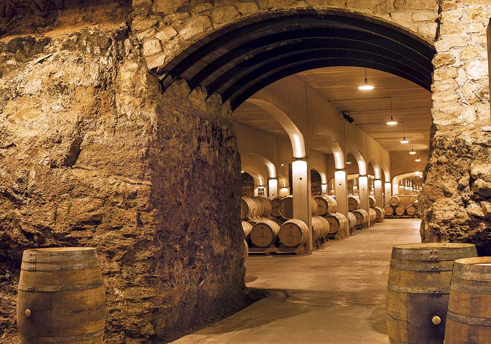
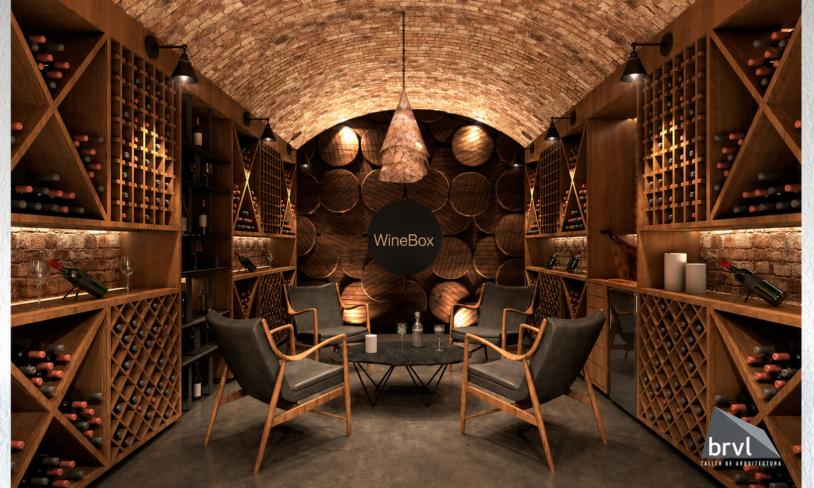

¿Donde Encortrarnos?
Winebox cuenta con 3 bodegas en toda la argentina, estas bodegas estan construidas de un modo que ayude a que nuestros vinos no pierdan su calidad y ayude a mejorar su sabor con el tiempo
Bodega en Mendoza

Breve decripción: Esta bodega se inauguró en el 2004, gracias a su ubicacion, se convirtio en una de las bodegas mas turisticas de la provincia, debido a que mostramos todo el proceso que conlleva la elaboración del producto.
Bodega en Cordoba

Breve descripción: Despues del exito de la primera bodega, en el 2007 abrimos nuestra segunda bodega en la provincia de Cordoba, esta bodega se caracteriza por su diseño, haciendo que el publico crea que está en una cueva y ademas cuenta con un amplio deposito de barrica
Bodega en Bariloche

Breve descrición: Para el 2019 decidimos crear nuestra bodega en barriloche, con el objetivo de aumetar el interes hacia nuestros productos a las nuevas generaciones, esta bodeba está completamente modernizada, para que el público vea los distintos tipos de tecnologia que usamos.